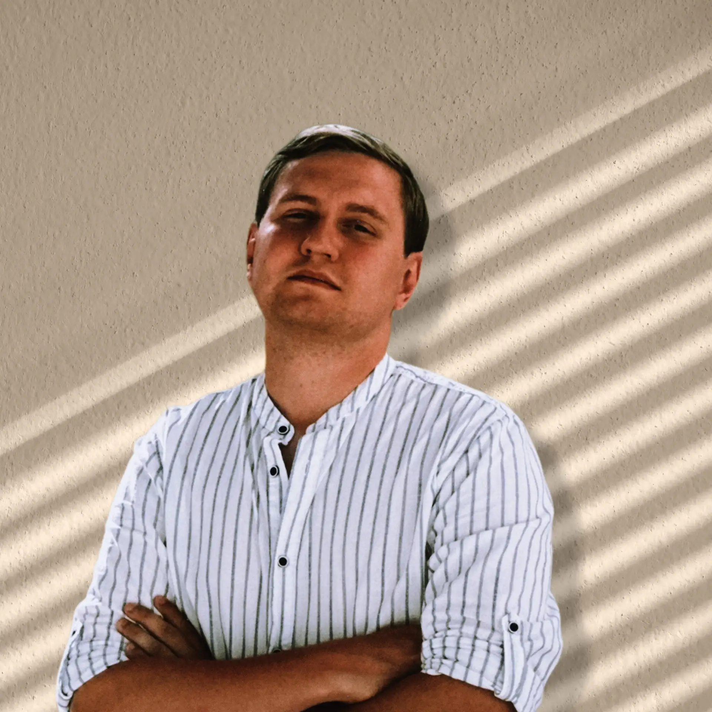
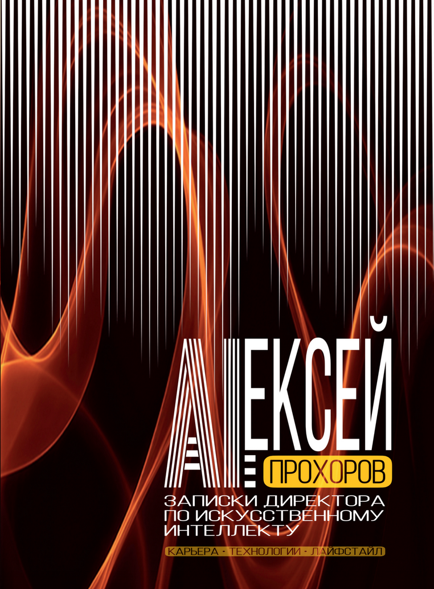

Создаю AI-стратегии, которые превращают данные в конкурентное преимущество.
Экспертиза на стыке науки, инженерии и бизнеса
Более 12 лет работаю на передовой технологий: от компьютерного зрения до больших языковых моделей. Как директор по развитию ИИ, я отвечаю за полный цикл — исследование, прототипирование, внедрение и масштабирование интеллектуальных систем в промышленной эксплуатации.
Моя миссия — делать искусственный интеллект практичным инструментом роста, а не хайповой абстракцией. Руковожу распределёнными R&D-командами, выстраиваю MLOps-процессы и формирую дорожные карты, которые синхронизируют технологические возможности с бизнес-целями.
Карьера в управлении разработкой AI-решений
Реальные кейсы внедрения искусственного интеллекта
Корпоративный чат-бот на базе LLM с RAG-архитектурой, обрабатывающий 80% типовых обращений без участия оператора.
Компьютерное зрение для дефектоскопии поверхностей в реальном времени: точность 99,2%, скорость 30 кадров/с.
Модель градиентного бустинга, предсказывающая отток за 14 дней с точностью 92%, интегрирована в CRM.
Авторские издания и публикации

Мысли, инсайты и аналитика
Здесь скоро появятся мои статьи и публикации.
Выпуски авторского подкаста об искусственном интеллекте, управлении и технологиях